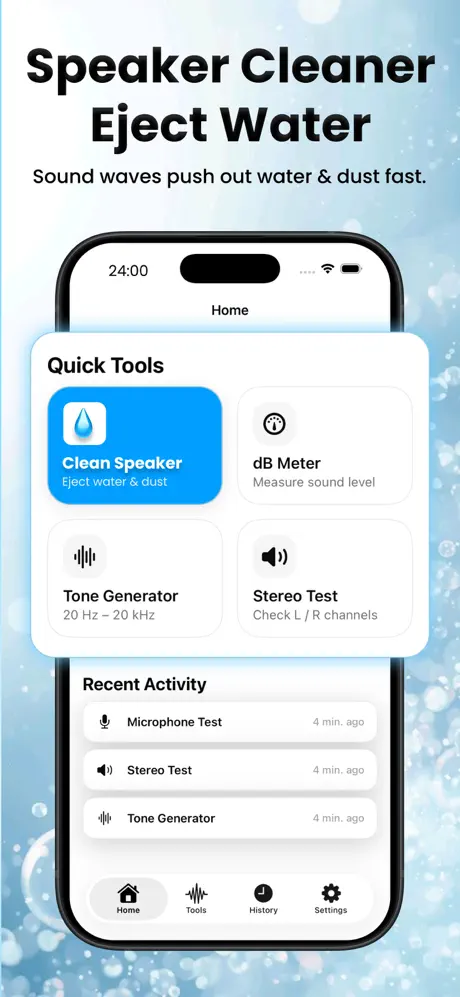
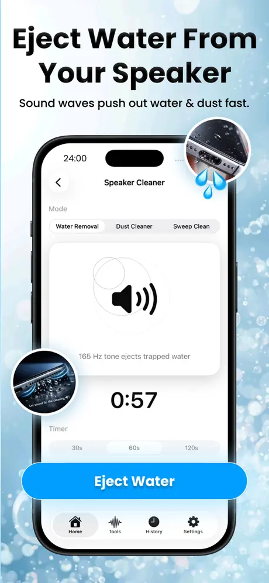
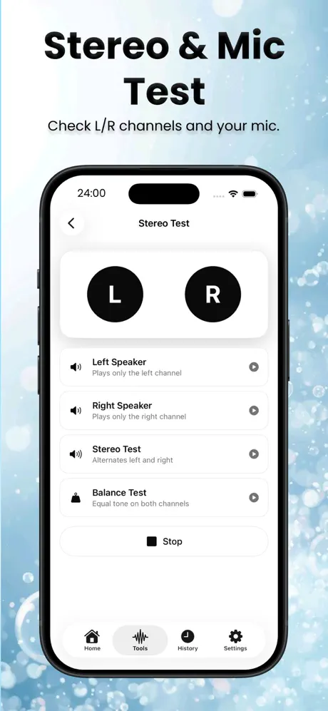
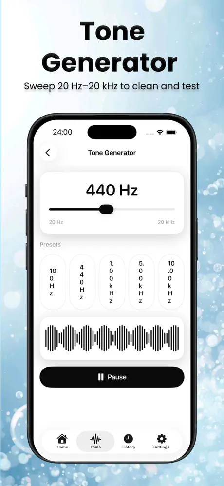
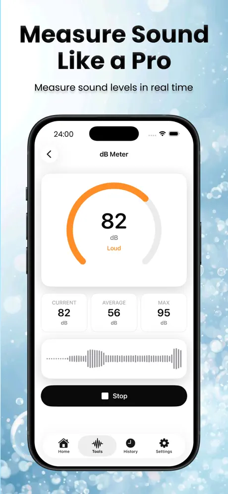

FxSound - Volume Boost & EQ
Audio & Music
Louder volume, deeper bass and a 5-band EQ.
Cleaning tones plus a compact audio test toolkit.
Plays cleaning tones meant to help shake water and dust from your phone's speaker, and includes a tone generator, stereo test, sound level meter and mic test.





Screenshots from the official App Store listing.
Speaker Cleaner plays sound frequencies designed to vibrate moisture and debris out of a phone speaker, an approach many people try after a splash.
It also works as an audio toolkit: generate any tone from 20 Hz to 20 kHz, check left and right channels, measure ambient sound levels in decibels, and record a quick mic test.
Results depend on the device and how much water or debris is involved. If your speaker stays muffled, contact Apple Support or an authorized service provider.
Plays targeted cleaning tones intended to push out water and dust.
Generate any frequency from 20 Hz to 20 kHz for testing and tuning.
Check that left and right channels both work.
Measure ambient noise in real-time decibels.
Record and play back to verify your microphone.
Features as described on the App Store listing. Some require an in-app purchase.
No app can repair water damage. The tones may help move water out of the speaker grille, but if sound stays distorted, have the device checked by Apple or an authorized service provider.
Audio & Music
Louder volume, deeper bass and a 5-band EQ.
Device Utilities
Find duplicate photos, large videos and messy contacts.